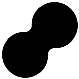

BKK-SOI
SURVIVOR
003
BKK, BANGKOK, กรุงเทพฯ (n.)
003
เมืองหลวงแห่งความวุ่นวาย
เมื่อหันซ้ายหันขวาทีไรก็มักจะเจอกับความแน่นิ่ง
เมื่อหันซ้ายหันขวาทีไรก็มักจะเจอกับความแน่นิ่ง
002
พร้อมหรือยังกับการเป็นสุดยอด SURVIVOR
ของมหานคร ที่จะทดสอบความอดทนของคุณ
บนถนนเส้นนี้
ของมหานคร ที่จะทดสอบความอดทนของคุณ
บนถนนเส้นนี้
READY. GET. SET. GO!
001


BKK, BANGKOK, กรุงเทพฯ (n.)
เมืองหลวงแห่งความวุ่นวาย
เมื่อหันซ้ายหันขวาทีไรก็มักจะเจอกับความแน่นิ่ง
เมื่อหันซ้ายหันขวาทีไรก็มักจะเจอกับความแน่นิ่ง
002
พร้อมหรือยังกับการเป็นสุดยอด SURVIVOR
ของมหานคร ที่จะทดสอบความอดทนของคุณ
บนถนนเส้นนี้
ของมหานคร ที่จะทดสอบความอดทนของคุณ
บนถนนเส้นนี้
READY. GET. SET. GO!
001
กรุงเทพรถติดมาก ⭒ รอนานๆก็บั่นทอนหัวใจ ⭒ ลาดพร้าวเมื่อไหร่จะขยับ ⭒ รถติดไม่ไหว ⭒ พี่วินรีบไปไหน ⭒ อโศกรถติดมาก ⭒ 2 ชั่วโมงแล้วรถไม่กระดิกเลย ⭒ โอ้ย ขนาดนี้บินได้บินไปแล้ว ⭒ ไฟแดง 1000 วิ ไฟเขียว 5 วิ ⭒ เมื่อไหร่จะถึง ข้าศึกบุกแล้ว ⭒
กรุงเทพรถติดมาก ⭒ รอนานๆก็บั่นทอนหัวใจ ⭒ ลาดพร้าวเมื่อไหร่จะขยับ ⭒ รถติดไม่ไหว ⭒ พี่วินรีบไปไหน ⭒ อโศกรถติดมาก ⭒ 2 ชั่วโมงแล้วรถไม่กระดิกเลย ⭒ โอ้ย ขนาดนี้บินได้บินไปแล้ว ⭒ ไฟแดง 1000 วิ ไฟเขียว 5 วิ ⭒ เมื่อไหร่จะถึง ข้าศึกบุกแล้ว ⭒





แล้วถ้ารถติดขนาดนี้
เป็น ความผิด
ของใครกันแน่ ?
เป็น ความผิด
ของใครกันแน่ ?
ในเมื่อคุณไม่สามารถหาคำตอบได้ และในขณะที่
เห็นหน้าปากซอยอยู่รำไร แต่ก็ไม่มีทางไปต่อ
เราจึงขอเสนอตัวช่วยเป็น ‘วินมอเตอร์ไซค์’
เพื่อลัดเลาะตามทางได้สะดวกกว่าที่เคย
เห็นหน้าปากซอยอยู่รำไร แต่ก็ไม่มีทางไปต่อ
เราจึงขอเสนอตัวช่วยเป็น ‘วินมอเตอร์ไซค์’
เพื่อลัดเลาะตามทางได้สะดวกกว่าที่เคย
ในเมื่อคุณไม่สามารถหาคำตอบได้
และในขณะที่เห็นหน้าปากซอยอยู่รำไร แต่ก็ไม่มีทางไปต่อ
เราจึงขอเสนอตัวช่วยเป็น ‘วินมอเตอร์ไซค์’
เพื่อลัดเลาะตามทางได้สะดวกกว่าที่เคย
และในขณะที่เห็นหน้าปากซอยอยู่รำไร แต่ก็ไม่มีทางไปต่อ
เราจึงขอเสนอตัวช่วยเป็น ‘วินมอเตอร์ไซค์’
เพื่อลัดเลาะตามทางได้สะดวกกว่าที่เคย

เลื่อนที่รถเพื่อเปลี่ยนไปขึ้นวิน


SOI
SOI, ซอย (n.)
ซอยเริ่มต้นมาจาก เมื่อปี 1960 มีการเข้ามาของระบบทุนนิยมตะวันตกและเป็นช่วงที่กรุงเทพฯ กำลังสร้างเมือง
ทำให้มีคนจากต่างจังหวัดเข้ามาหางานทำที่กรุงเทพฯ
อย่างล้นหลาม นักพัฒนาที่ดินจึงได้กว้านซื้อที่
และแบ่งส่วนตัดเป็นถนนย่อย ๆ ออกเพื่อจะขาย
ซึ่ง ณ ขณะนั้นประเทศไทยยังไม่ได้มีกฎหมาย
ชัดเจนเรื่องความกว้างถนน จึงทำให้เกิด
ซอยแคบ ๆ เต็มไปหมด
SOI, ซอย (n.)
ซอยเริ่มต้นมาจาก เมื่อปี 1960 มีการเข้ามาของระบบทุนนิยมตะวันตกและเป็นช่วงที่กรุงเทพฯ กำลังสร้างเมืองทำให้มีคนจาก
ต่างจังหวัดเข้ามาหางานทำที่กรุงเทพฯ อย่างล้นหลาม
นักพัฒนาที่ดินจึงได้กว้านซื้อที่และแบ่งส่วนตัดเป็นถนนย่อย ๆ
ออกเพื่อจะขายซึ่ง ณ ขณะนั้นประเทศไทยยังไม่ได้มีกฎหมาย
ชัดเจนเรื่องความกว้างถนน จึงทำให้เกิดซอยแคบ ๆ เต็มไปหมด
SUPER

SUPER BLOCK (n.)
ด้วยกรุงเทพฯ พัฒนาเมืองขึ้นจาก คูนาคันดิน ขนัดสวน ผนวกกับการเดินทาง
ในคูคลองเป็นหลัก แต่เมื่อเปลี่ยนมาเป็นถนน
กลับสร้างถนนมาตรฐานเพียงแค่ถนนสายหลัก
เท่านั้น การวางผังเมืองและบล็อกมาตรฐาน
ของกรุงเทพฯ จึงกลายเป็นบล็อกขนาดใหญ่
(Super Block) ที่มีขนาดประมาณ 2,000 x
2,000 เมตรขึ้นไป ซึ่งผลของปรากฏการณ์นี้
คือเมื่อบล็อกใหญ่ พื้นที่ถนนก็ต้องมีขนาดเล็ก
ลงไป ทำให้บ้านที่อยู่ด้านใน Super Block
เหล่านี้ ไม่สามารถเดินเท้าไปต่อกับระบบ
ขนส่งมวลชนที่ปากซอยได้ต้องอาศัย
รถ 4 ล้อเล็ก รถเมล์เล็กหรือมอเตอร์ไซค์รับจ้าง
BL CK
O


SUPER BLOCK (n.)
ด้วยกรุงเทพฯ พัฒนาเมืองขึ้นจาก คูนา คันดิน ขนัดสวน
ผนวกกับการเดินทาง ในคูคลองเป็นหลัก แต่เมื่อเปลี่ยนมา
เป็นถนน กลับสร้างถนนมาตรฐานเพียงแค่ถนนสายหลักเท่านั้น
การวางผังเมืองและบล็อกมาตรฐานของกรุงเทพฯ จึงกลาย
เป็นบล็อกขนาดใหญ่ (Super Block) ที่มีขนาดประมาณ
2,000 x 2,000 เมตรขึ้นไป ซึ่งผลของปรากฏการณ์นี้
คือเมื่อบล็อกใหญ่ พื้นที่ถนนก็ต้องมีขนาดเล็กลงไป
ทำให้บ้านที่อยู่ด้านใน Super Block เหล่านี้ไม่สามารถ
เดินเท้าไปต่อกับระบบขนส่งมวลชนที่ปากซอยได้
ต้องอาศัยรถ 4 ล้อเล็ก รถเมล์เล็กหรือมอเตอร์ไซค์รับจ้าง

ฟังเสียง
จากชาวซอย
จากชาวซอย


แล้วคุณคิดว่า
ซอยแบบไหน
ที่กรุงเทพฯ
กำลังเผชิญอยู่ ?
ซอยแบบไหน
ที่กรุงเทพฯ
กำลังเผชิญอยู่ ?
YOUR DESTINATION IS "TUN"
YOUR DESTINATION IS "TUN"
YOUR DESTINATION IS "TUN"
YOUR DESTINATION IS "TUN"
YOUR DESTINATION IS "TUN"
YOUR DESTINATION IS "TUN"
YOUR DESTINATION IS "TUN"
YOUR DESTINATION IS "TUN"
YOUR DESTINATION IS "TUN"
YOUR DESTINATION IS "TUN"


INF0

กรุงเทพฯ มีการวางผังเมืองแบบก้างปลา ทำให้มีทางเลือกในการเดินทางน้อย
เนื่องจากเส้นทางไม่เชื่อมต่อกันเหมือนผังเมืองแบบตาราง ส่งผลให้
การตั้งเป้าหมายจะไปที่ที่หนึ่งจะเกิดการจราจรติดขัด / แน่นหนา
เพราะมีเส้นทางให้เลือกไม่มาก
เช่น ในบริบทของชุมชนหรือเมืองที่มีบ้านมากกว่า 1 หลังในพื้นที่
การโครงถนนแบบที่มีซอยตันก็คงจะทำให้ถนนเส้นรอบชุมชนที่จะพา
ไปสู่โรงเรียนประสบกับปัญหารถติด เนื่องจากทุกคนต้องเชื่อมออกมา
ใช้ถนนเส้นดังกล่าวเพื่อไปโรงเรียน
ในขณะเดียวกัน โครงถนนที่เชื่อมต่อกันมาก ทุกบ้านมีทางเลือก
เป็นของตนเองได้ สามารถหลีกหนีเส้นที่รถติดไปเส้นทางอื่น ๆ ทำให้
การกระจุกตัวมีเพียงพื้นที่ใกล้จุดหมายเท่านั้น
เนื่องจากเส้นทางไม่เชื่อมต่อกันเหมือนผังเมืองแบบตาราง ส่งผลให้
การตั้งเป้าหมายจะไปที่ที่หนึ่งจะเกิดการจราจรติดขัด / แน่นหนา
เพราะมีเส้นทางให้เลือกไม่มาก
เช่น ในบริบทของชุมชนหรือเมืองที่มีบ้านมากกว่า 1 หลังในพื้นที่
การโครงถนนแบบที่มีซอยตันก็คงจะทำให้ถนนเส้นรอบชุมชนที่จะพา
ไปสู่โรงเรียนประสบกับปัญหารถติด เนื่องจากทุกคนต้องเชื่อมออกมา
ใช้ถนนเส้นดังกล่าวเพื่อไปโรงเรียน
ในขณะเดียวกัน โครงถนนที่เชื่อมต่อกันมาก ทุกบ้านมีทางเลือก
เป็นของตนเองได้ สามารถหลีกหนีเส้นที่รถติดไปเส้นทางอื่น ๆ ทำให้
การกระจุกตัวมีเพียงพื้นที่ใกล้จุดหมายเท่านั้น
กรุงเทพฯ มีการวางผังเมืองแบบก้างปลาทำให้มีทางเลือกในการ
เดินทางน้อยเนื่องจากเส้นทางไม่เชื่อมต่อกันเหมือนผังเมือง
แบบตาราง ส่งผลให้การตั้งเป้าหมายจะไปที่ที่หนึ่งจะเกิด
การจราจรติดขัด / แน่นหนา เพราะมีเส้นทางให้เลือกไม่มาก
เช่น ในบริบทของชุมชนหรือเมืองที่มีบ้านมากกว่า 1 หลังในพื้นที่
โครงถนนแบบที่มีซอยตันก็คงจะทำให้ถนนเส้นรอบชุมชนที่จะ
พาไปสู่โรงเรียนประสบกับปัญหารถติด เนื่องจากทุกคนต้อง
เชื่อมออกมาใช้ถนนเส้นดังกล่าวเพื่อไปโรงเรียน
ในขณะเดียวกัน โครงถนนที่เชื่อมต่อกันมาก ทุกบ้านมีทางเลือก
เป็นของตนเองได้ สามารถหลีกหนีเส้นที่รถติดไปเส้นทางอื่น ๆ
ทำให้การกระจุกตัวมีเพียงพื้นที่ใกล้จุดหมายเท่านั้น
เดินทางน้อยเนื่องจากเส้นทางไม่เชื่อมต่อกันเหมือนผังเมือง
แบบตาราง ส่งผลให้การตั้งเป้าหมายจะไปที่ที่หนึ่งจะเกิด
การจราจรติดขัด / แน่นหนา เพราะมีเส้นทางให้เลือกไม่มาก
เช่น ในบริบทของชุมชนหรือเมืองที่มีบ้านมากกว่า 1 หลังในพื้นที่
โครงถนนแบบที่มีซอยตันก็คงจะทำให้ถนนเส้นรอบชุมชนที่จะ
พาไปสู่โรงเรียนประสบกับปัญหารถติด เนื่องจากทุกคนต้อง
เชื่อมออกมาใช้ถนนเส้นดังกล่าวเพื่อไปโรงเรียน
ในขณะเดียวกัน โครงถนนที่เชื่อมต่อกันมาก ทุกบ้านมีทางเลือก
เป็นของตนเองได้ สามารถหลีกหนีเส้นที่รถติดไปเส้นทางอื่น ๆ
ทำให้การกระจุกตัวมีเพียงพื้นที่ใกล้จุดหมายเท่านั้น